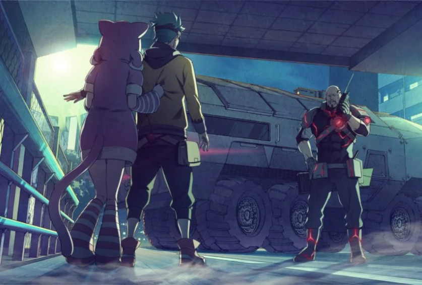

Anonymous;Code es la sexta entrega principal de la serie. Fue lanzada el 28 de Julio de 2022 en Playstation 4 y Nintendo Switch, y llegaría a Steam en octubre de 2023 junto a su traducción oficial al inglés, siendo la entrega más reciente de la serie.
La historia toma lugar en el año 2037, un año después de la catastrofe mundial conocida como la "Sad Morning", evento en el cual la red de satelites militares SA4D fallaron debido a un error computacional a nivel mundial, lo cual causo que dispararan contra varias de las ciudades más importantes del mundo, devastándolas en el proceso; la cifra de muertos que resultaron de esta catastrofe fue de 120 millones de personas.
En esta entrega, el jugador observará a Takaoka Pollon, un joven que sueña en convertirse en un heroe admirado por todos. Junto a su mejor amigo, Yumikawa Cross, se ganan la vida realizando diversos trabajos de Hackeo bajo el nombre de "Las Sinfonías de Nakano".
Durante los eventos de la historia, Pollon obtiene el poder de "guardar" un punto de la realidad, punto que posteriormente puede "cargar" cuando lo desee, regresandolo a ese instante de tiempo, como si de un viaje en el tiempo se tratase. Esta habilidad es muy similar a las mecanicas de "Guardar/Cargar" de los videojuegos.
La historia toma lugar en el año 2037, un año después de la catastrofe mundial conocida como la "Sad Morning", evento en el cual la red de satelites militares SA4D fallaron debido a un error computacional a nivel mundial, lo cual causo que dispararan contra varias de las ciudades más importantes del mundo, devastándolas en el proceso; la cifra de muertos que resultaron de esta catastrofe fue de 120 millones de personas.
En esta entrega, el jugador observará a Takaoka Pollon, un joven que sueña en convertirse en un heroe admirado por todos. Junto a su mejor amigo, Yumikawa Cross, se ganan la vida realizando diversos trabajos de Hackeo bajo el nombre de "Las Sinfonías de Nakano".
Durante los eventos de la historia, Pollon obtiene el poder de "guardar" un punto de la realidad, punto que posteriormente puede "cargar" cuando lo desee, regresandolo a ese instante de tiempo, como si de un viaje en el tiempo se tratase. Esta habilidad es muy similar a las mecanicas de "Guardar/Cargar" de los videojuegos.

Anonymous;Code fue originalmente anunciado en 2015, con fecha de salida para 2016, no obstante, su desarrollo enfrentó múltiples problemas y reescrituras, por lo que tomo 7 años para que la novela pudiera terminarse.
Esta entrega actúa como la "reunión espiritual" de toda la Science Adventure, siendo que utiliza todos y cada uno de los elementos introducidos en entregas anteriores, recontextualiza muchas cosas sobre la serie, e incluso da explicación a varios misterios no resueltos en otras entregas. Por esto, se recomienda leer todas las entregas anteriores antes de iniciar Anonymous;Code.
Si estás interesado en leer Anonymous;Code, la opción más recomendada es comprarlo en Steam y utilizar el parche de mejoras de Committe of Zero para tener la mejor experiencia posible.
Esta entrega actúa como la "reunión espiritual" de toda la Science Adventure, siendo que utiliza todos y cada uno de los elementos introducidos en entregas anteriores, recontextualiza muchas cosas sobre la serie, e incluso da explicación a varios misterios no resueltos en otras entregas. Por esto, se recomienda leer todas las entregas anteriores antes de iniciar Anonymous;Code.
Si estás interesado en leer Anonymous;Code, la opción más recomendada es comprarlo en Steam y utilizar el parche de mejoras de Committe of Zero para tener la mejor experiencia posible.